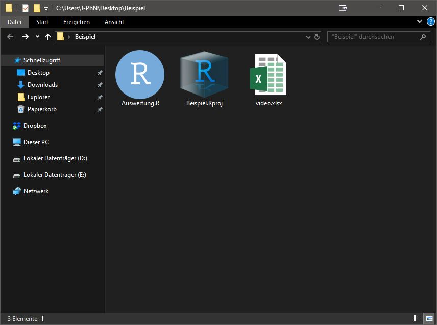
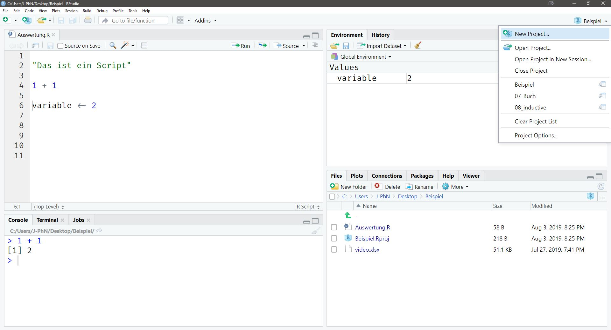
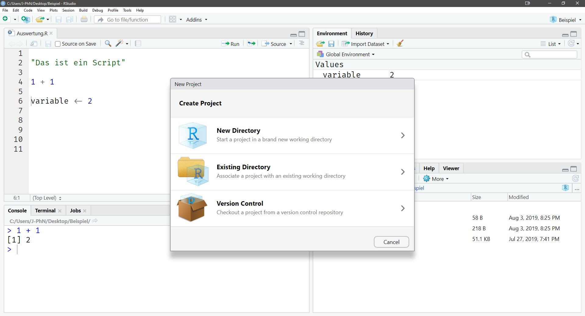
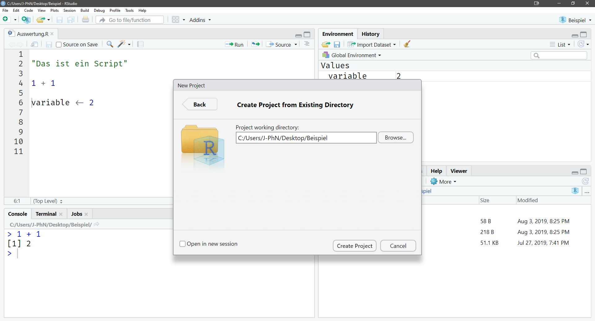

Kapitel 3 Projektorientierter Workflow
3.1 Was ist das Problem?
Es wird häufig unterschätzt, wie früh die ersten Hürden im Erstkontakt mit Programmiersprachen auftauchen. Meistens ist nach der Installation die nächste Frage, wie man den Datensatz denn nun in R eingelesen bekommt. Das war in sofern nicht immer ganz trivial, als das es diverse verschiedene Wege gibt, dieser Aufgabe Herr zu werden, aber keine davon eine Möglichkeit bietet, die bei allen Betriebssystemen einheitlich ist, geschweige denn stabil und reproduzierbar. Glücklicherweise gibt es mittlerweile Projekte innerhalb von R, die wir in diesem Kapitel Schritt für Schritt erkunden werden. Aber nichts überstürzen. Erst einmal klären wir auf, was die Sache des Einlesens denn so schwierig für Anfänger und mühsam für Fortgeschrittene machen kann.
Der Pfad oder auch Pfadname beschreibt das Verzeichnis in dem auf Deinem Computer Deine Dateien liegen. Also konkreter in unserem Beispiel: Der Ort, wo der Datensatz respektive unser R Skript liegt, mit dem wir den Datensatz einlesen möchten. Wenn unser Datensatz unter Windows auf dem Desktop im Ordner Beispiel liegt, würde das so aussehen: C:\Users\J-PhN\Desktop\Beispiel, wobei C der Name der Festplatte und J-PhN der Benutzername ist. Auf macOS und Linux hingeben so: /home/J-PhN/Desktop/Beispiel oder die Kurzform ~/Desktop/Beispiel. Hier stoßen wir direkt auf ein zentrales Problem bezüglich Reproduzierbarkeit. Wie kann ich garantieren, dass mein Skript auf jedem Computer mit R läuft, wenn man den Pfad manuell festlegen muss und dieser sowohl abhängig vom Betriebssystem als auch abhängig vom momentanen Ort der Datei ist? Würden wir den Ordner Beispiel nach unserer Analyse verschieben, würde unser R Skript plötzlich nicht mehr funktionieren. Dafür schaffen R Projekte Abhilfe.
3.2 R Projekte erstellen
Bleiben wir bei unserem Ordner Beispiel, der sich auf dem Desktop befindet. In diesem Ordner befinden sich drei Dateien.

Auswertung.R ist unser R Skript, Beispiel.Rproj unsere Projektdatei und video.xlsx der Datensatz, den wir einlesen wollen. Die Projektdatei muss man vorher selbst erstellen. Das funktioniert wie folgt:
Oben rechts befindet sich ein Reiter namens Project: (None) wenn kein Projekt geöffnet ist und ansonsten der Projektname (z.B. das Projekt Beispiel). Öffne das Dropdown Menu.

Uns interessieren zum einen New Project... und Open Project... und zum anderen stehen weiter unten andere Projekte, die vorher geöffnet wurden (hier 07_Buch und 08_inducitve). Man kann mit einem einfachen Klick zwischen diesen Projekten wechseln. Dieses Feature erleichtert die Arbeit ungemein, da man nicht mehr auf dem Computer irgendwo den Ordner mit den richtigen Dateien suchen muss. Zum Erstellen eines neuen Projekts klicke auf New Project.... Es erscheint ein neues Fenster.

Wir entscheiden uns exemplarisch für Existing Directory. Das bedeutet, unser Ordner Namens Beispiel existiert bereits auf dem Desktop. Ob dieser leer oder bereits mit Dateien gefüllt ist, ist nicht weiter von Bedeutung.

Mit einem Klick auf Create Project wird nun eine Projektdatei mit der Endung .Rproj in den gewählten Ordner gespeichert. Projekte bieten übrigens bezüglich Reproduzierbarkeit einen weiteren Bonus. Jedes mal beim Starten wird eine neue und in sich abgeschlossene R Umgebung geladen, so dass man garantieren kann, das der Code genau so auch auf anderen Computern ausgeführt werden kann. Beachte, dass Du beim Öffnen eines R Projects in dem Ordner nicht auf das R Skript (hier Auswertung.R) klickst sondern auf die Projektdatei und erst im Anschluss das R Skript öffnest. Für alle zukünftigen Öffnungen kannst Du dann einfach in dem eingangs beschrieben Dropdown Menu rechts oben das Projekt auswählen. So weit so gut, aber dem Lösen des Einleseproblems sind wir damit nur einen kleinen Schritt näher gekommen. Nun brauchen wir noch das here Package.
Beim Arbeiten in einer Cloud wie Dropbox kann es zu einer Fehlermeldung kommen, die besagt, dass RStudio nicht auf die Datei zugreifen kann. Um das zu umgehen, muss die Synchronisierung der Cloud angehalten werden.
3.3 Das here Package
Die Magie passiert, wenn Du nun das here Package lädst. Das Package findet sofort den relativen Pfad zu Deiner Projektdatei heraus. Was bedeutet das? Während wir mit C:\Users\J-PhN\Desktop\Beispiel einen absoluten Pfad gegeben haben, findet das here Package den Ordner Beispiel mit der Projektdatei, unabhängig von der Lage des Ordners. In der Praxis sieht das so aus:
Würden wir den Ordner verschieben, hat das keine Auswirkungen auf unseren Code. Das Package würde wieder zum Projektordner finden. Und somit haben wir dem Thema des Einlesen mindestens schon den halben Schrecken genommen. Der erste Schritt ist also immer das Erstellen eines R Projekts und das Laden des Packages am Anfang jedes neuen Scripts, mit dem man einen Datensatz einlesen möchte.
Aber wie kann man den Datensatz nun einlesen?